Get Started with Unity
If you are completely new to Unity, this website is for you!
By following the instructions provided below, you can learn how to create your Unity ID, download the Unity Hub and Unity Editor, activate your license, and create a project.
For advanced users, please navigate to Unity User Manual for more detailed information on Unity.
Create a Unity ID
A Unity ID is your user account with Unity. After you have created your account, you can download and start using Unity.
To create a Unity ID, follow the steps below:
- Visit id.unity.com
- Click create one (blue text)
- Enter your email address and full name, and create a desired username and password.
- Your username is for your Unity Community profile and should be unique.
- Be sure to tick the boxes to agree with the Unity Terms of Service and Unity Privacy Policy.
- Click the green button, Create a Unity ID. A confirmation email will be sent to the email address you provided.
- Click the email confirmation link you received to verify your email address.
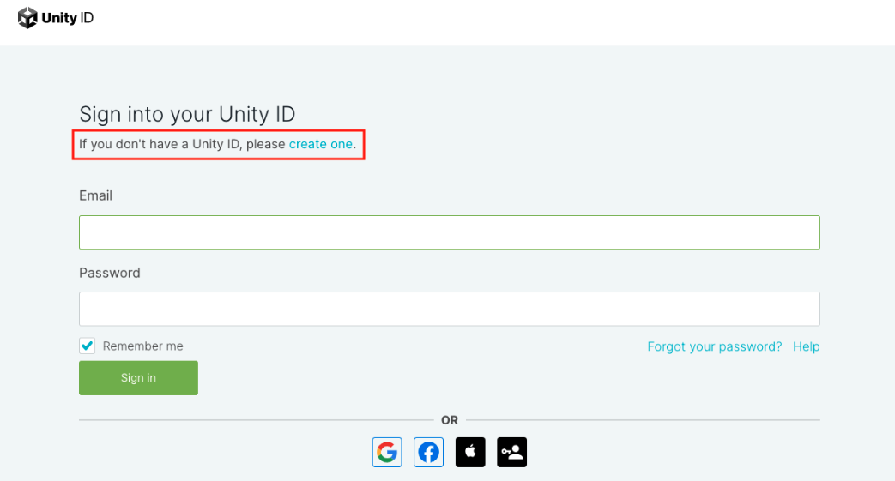
Please note:

Alternatively, you can sign in to Unity with your Google account, Facebook account, or Apple ID. You can also sign in with Single sign-on (SSO).
Download Unity Hub and Unity Editor
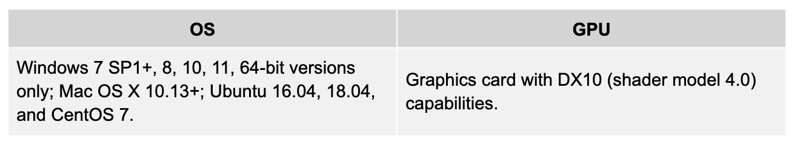
*Systems requirements for Unity Hub and Unity Editor
Unity Hub
Unity Hub is a standalone application that streamlines the way you find, download, and manage your Unity Projects and installations. In addition, you can manually add versions of the Editor that you have already installed on your machine to your Hub.
Download Unity Hub
To download Unity Hub, follow the steps below:
- Visit https://unity.com/download#how-get-started.
- Scroll down and click on the download link based on your operating system (Windows or macOS).
Please note: For Linux users, please click Instructions for Linux to learn how to download the program for your system.
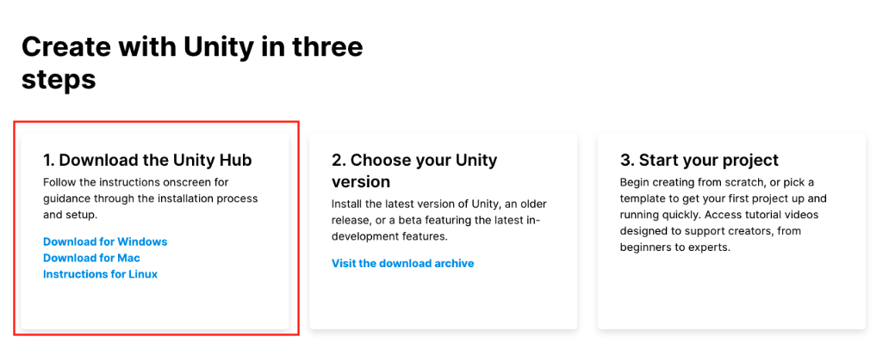
What can you do with Unity Hub?
- Manage your Unity ID
- Activate your Unity license and return activations
- Manage your Unity projects
- Download and launch the Unity Editor
- Access Unity tutorials and Unity Learn
Unity Editor
Unity Editor is an real-time 3d (RT3D) development platform for creating 2D and 3D multiplatform games and interactive experiences.
Download Unity Editor
You can download the Unity Editor from Unity Hub and the Unity Download Archive.
To download the Editor from Unity Hub, follow the steps below:
- Sign in to your Unity ID from Unity Hub.
- Click Installs on the left sidebar, then click the blue button Install Editor.
- Choose a Unity Editor version and click the blue Install button.
- Choose the modules you would like to add. For platforms, choose your projects’ target platform. You can also scroll down to choose the language pack and the Unity documentation.
- After you choose all the modules, click the blue Continue button to download the Unity Editor and modules.
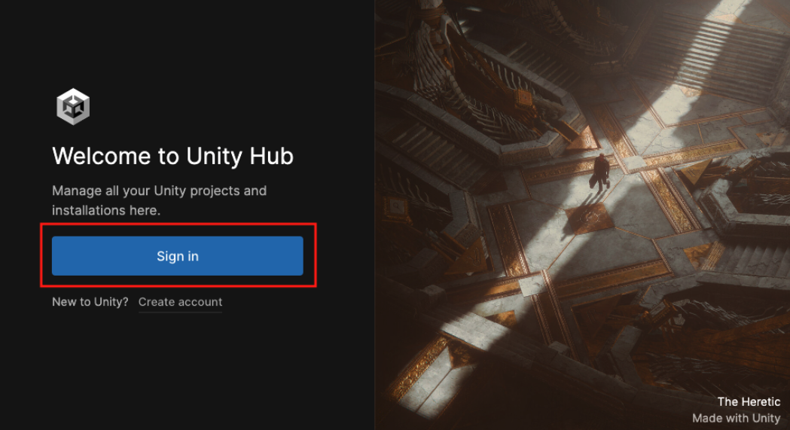
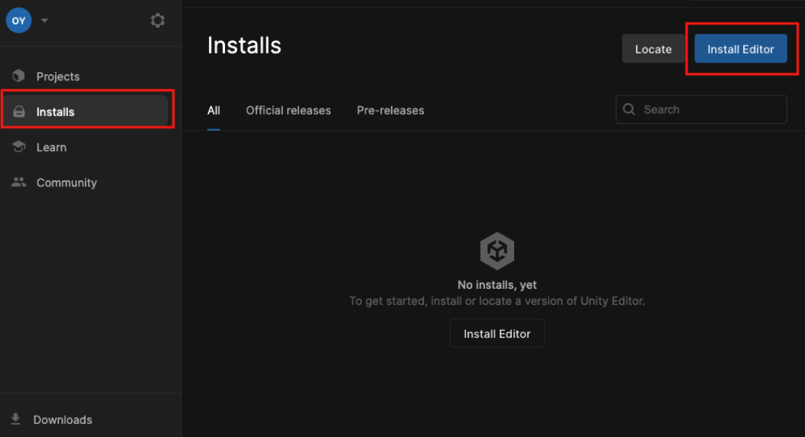
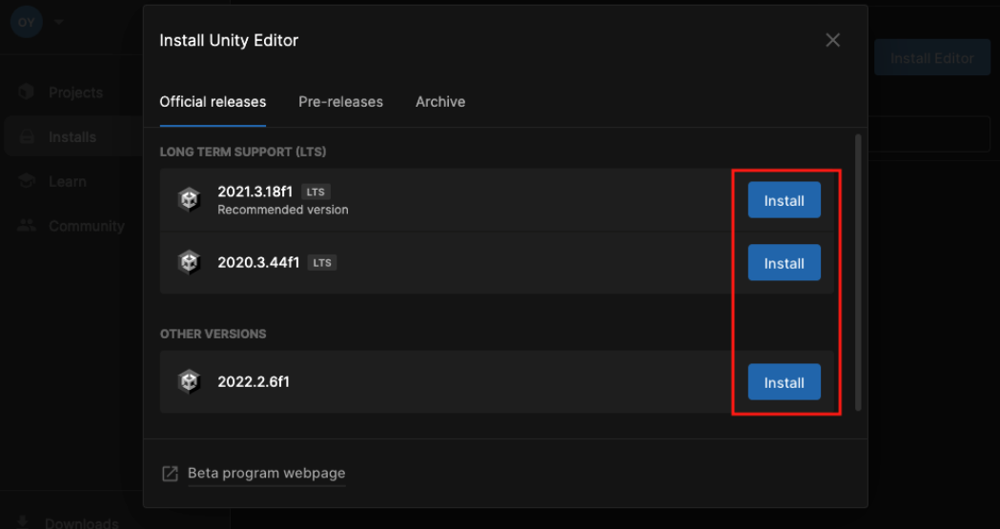
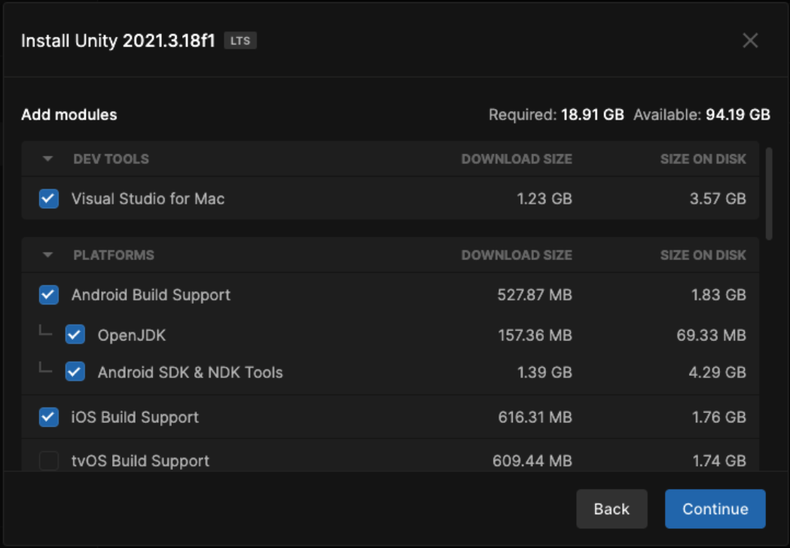
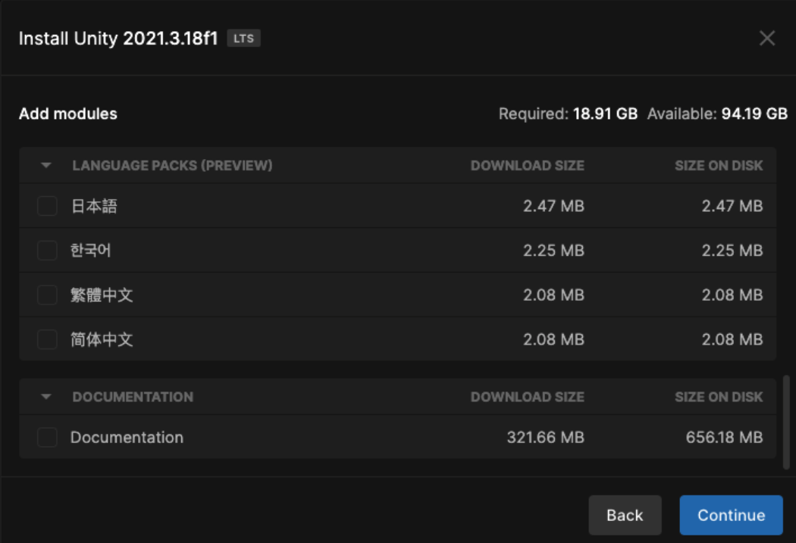
Please note:
Not all Unity Editor versions are available from Unity Hub. If you would like to download other versions of Editor, please visit Unity Download Archiveto access them.
You can only add modules to the Editor if they are installed from Unity Hub. If not, you will need to add modules manually. To access all modules, visit Unity Download Archive, and click the blue Release Notes button next to each version of Editor.
For example:
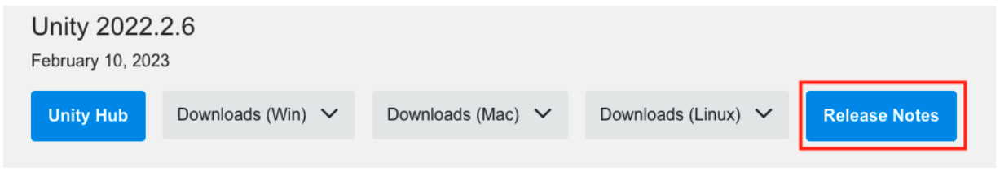
Activate the License
To use the Unity Editor, you must have a valid license. The types of licenses available for the Unity Editor include:
- Unity Personal
- Unity Plus
- Unity Pro
- Unity Enterprise
Unity Personal is free. Unity Plus, Unity Pro, and Unity Enterprise licenses can be purchased from: https://store.unity.com/compare-plans.
Please note: Before you use a Unity license, be sure to read Unity Editor Software Terms and check if you are using the correct tier of license.
To activate your license, follow the instructions in Unity’s Knowledge Base article: How do I activate my license?.
If you need to return the existing activations, refer to the article, How do I return the activations on my Pro/ Plus/ Enterprise license?.
If you activated your license manually (via the offline mode), please contact the Unity Support team so they can return the manual activation for you.
Create a Project
Before you create a project from the Unity Hub, you must have a Unity Editor installed and a valid Unity license.
To create a project, follow the instructions below:
- Click Projects in the left sidebar, then click the blue New project button on the top right.
- If you have multiple versions of Editor installed, be sure to choose the Editor version. Then enter your project name and choose your project location.
- After you fill in the necessary information, click the blue Create Project button. Your project will be created.
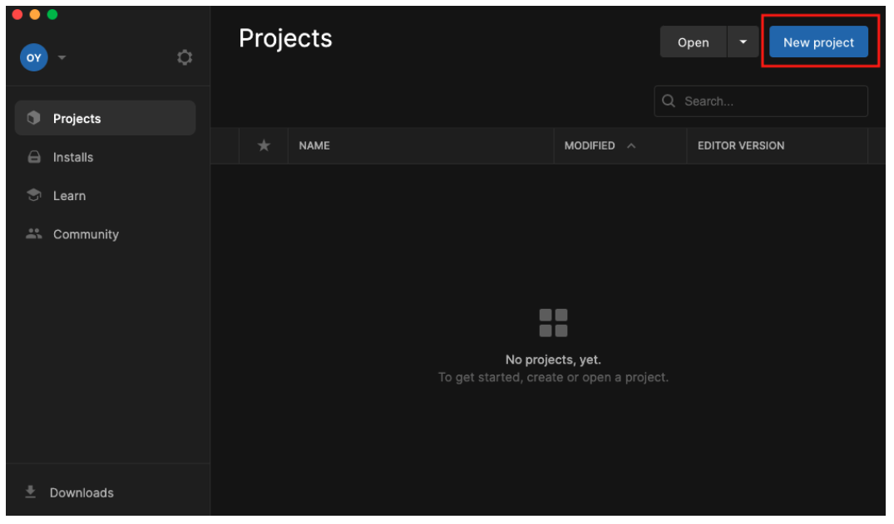
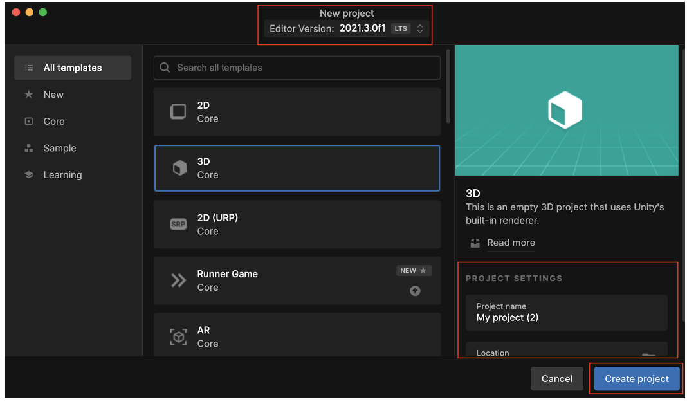
Congratulations, you are now ready to create your projects with Unity!
If you have any non-technical questions, please contact the Unity Customer Experience via this web form. Alternatively, you can read the Knowledge Base articles.
If you have any technical questions, please try to post your questions on the Unity Forum, where you can access the vast archive of knowledge about the Unity ecosystem.